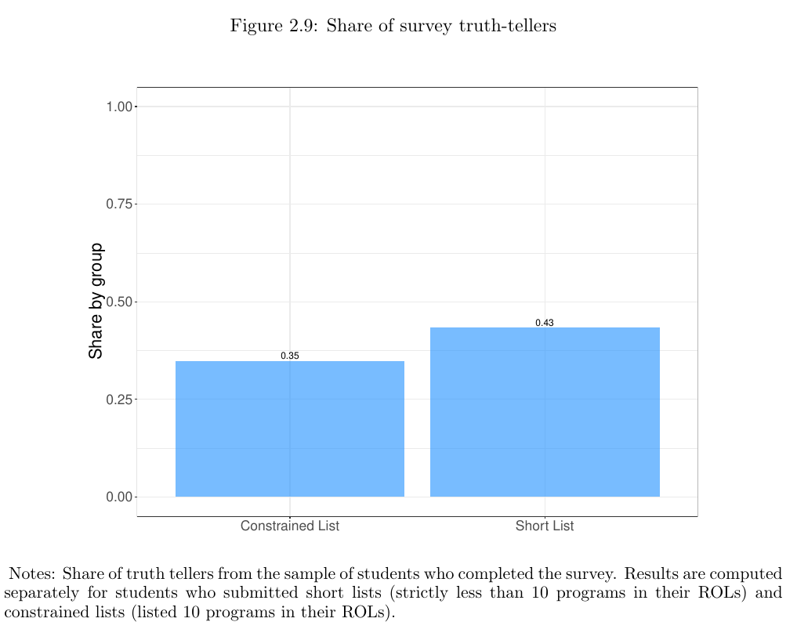
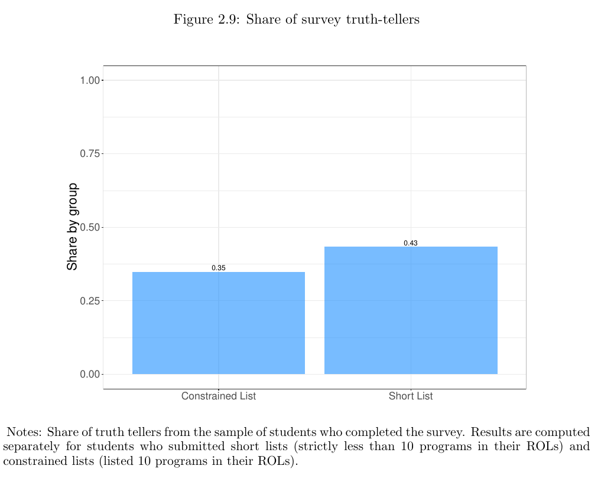

Ph.D. in Economics
2015-2021 University of Pennsylvania
I am an Assistant Professor in the Department of Economics at the W. P. Carey School of Business at Arizona State University. I am an Applied Economist working on Empirical IO/Market Design, Education Economics, and Labor Economics. I broadly study market design policies in practice in the context of matching markets. My current research focuses on how dynamic considerations and imperfect information can affect the design of matching markets, change the performance of assignment mechanisms used in many countries worldwide, and impact agents' outcomes.
Dynamic College Admissions, with I. Ríos. [See paper] [See electronic companion]
Reject and Resubmit, Econometrica.
We study the relevance of incorporating dynamic incentives and eliciting private information about students’ preferences to improve their welfare and down-stream outcomes in centralized assignment mechanisms. Using administrative data and two nationwide surveys, we identify that two behavioral channels largely explain students’ dynamic decisions: (i) initial mismatches and (ii) learning. Based on these facts, we build and estimate a structural model of students’ college progression in the presence of a centralized admission system, allowing students to learn about their match-quality over time and re-apply to the system. We use the estimated model to analyze the impact of changing the assignment mechanism and the re-application rules on the efficiency of the system. Our counterfactual results show that policies that provide score bonuses that elicit information on students’ cardinal preferences and leverage dynamic incentives can significantly decrease switchings and increase students’ overall welfare.
See paper See electronic companion

College Application Mistakes and the Design of Information Policies at Scale , with I. Ríos, A. Fabre, and C. Neilson. [See paper]
In this paper, we present the results of a multi-year collaboration with policy-makers to design and evaluate whether information policies implemented at scale can effectively improve students’ outcomes. Using a series of nationwide surveys, we find that 40% of students do not apply to their preferred college and major, and 10% of these students would have strictly benefited by including these programs. Upon these results, we implemented with the Ministry of Education of Chile a large-scale field experiment for college admissions, which included personalized information about program characteristics, students’ admission probabilities, and alternative major recommendations. The intervention significantly reduced application mistakes, increasing the probability of assignment for unmatched students by 20% and the probability of improving the assignment of undermatched students by 38%. After scaling-up the policy, the intervention approximately doubled the matching probability for unmatched and undermatched students and tripled the enrollment likelihood for initially unmatched students.
See paperDo “short-list” students report truthfully? Strategic behavior in the Chilean college admissions problem, with I. Ríos. [See paper]
We analyze the application process in the Chilean College Admissions problem. Students can submit up to 10 preferences, but most students do not fill their entire application list ("short-list"). Even though students face no incentives to misreport, we find evidence of strategic behavior as students tend to omit programs for which their admission probabilities are too low. To rationalize this behavior, we construct a portfolio problem where students maximize their expected utility given their preferences and beliefs over admission probabilities. We adapt the estimation procedure proposed by Agarwal and Somaini (2018) to solve a large portfolio problem. To simplify this task, we show that it is suficient to compare a ROL with only a subset of ROLs ("one-shot swaps") to ensure its optimality without running into the curse of dimensionality. To better identify the model, we exploit a unique exogenous variation on the admission weights over time. We find that assuming truth-telling leads to biased results. Specifically, when students only include programs if it is strictly profitable to do so, assuming truth-telling underestimates how preferred selective programs are and overstates the value of being unassigned and the degree of preference heterogeneity in the system. Ignoring the constraint on the length of the list can also result in biased estimates, even if the proportion of constrained ROLs is relatively small. Our estimation results strongly suggest that "short-list" students should not be interpreted as truth-tellers, even in a seemingly strategy-proof environment. Finally, we apply our estimation method to estimate students' preferences for programs and majors in Chile and find strong differences in preferences regarding students' gender and scores.
See paper 

Occupational Licensing in Global Labor Markets: Evidence from Physicians , with J. P. Atal, P. Muñoz, and C. Otero.
Platform Complexities and their Implications for Application Mistakes , with I. Rios, M. Martinez , and C. Neilson.
The Effect of Automation on the U.S Labor Market under the Affordable Care Act , with H. Fang, and A. Shephard.
Hybrid Dutch auctions and Toxic bonds, with T. Mylovanov, and R. Vohra.
Improving the Chilean College Admissions System, with R. Cominetti, I. Ríos and G. Parra, in Operations Research (2021). First place, Doing Good with Good OR - Student Paper Competition (2018). [See paper]
In this paper we present the design and implementation of a new system to solve the Chilean college admissions problem. We develop an algorithm that obtains all stable allocations when preferences are not strict and when all tied students in the last seat of a program (if any) must be allocated, and we used this algorithm to determine which mechanism was used to perform the allocation. In addition, we propose a new method to incorporate the affirmative action that is part of the system and correct the inefficiencies that arise from having double-assigned students. By unifying the regular admission with the affirmative action, we have improved the allocation of approximately 3% of students every year since 2016. From a theoretical standpoint, we introduce a new concept of stability and we show that some desired properties, such as strategy-proofness and monotonicity, cannot be guaranteed under flexible quotas. Nevertheless, we show that the mechanism is strategy-proof in the large, and therefore truthful reporting is approximately optimal.
See paper
Effect of Including High-School Grades Rank in the Admission Process to Chilean Universities, with A. Mizala and I. Ríos, in Pensamiento Educativo, 52 (1), 95–118, 2015. [See paper]
This paper analyses the effect of including high school grade rankings as a new factor in the admission process to Chilean universities. The paper evaluates the impact of different weighting strategies of the high school grade ranking and identifies socioeconomic and gender characteristics of the students who were benefited and harmed by the inclusion of this new factor. Starting with the weightings of the different factors considered in the Admission Process for 2012, we simulate, using a selection algorithm, alternative weightings for high school grade rankings in the 2013 Admission Process. We also evaluate the effect of the actual increase in the weighting of grade ranking in the 2014 admission process. Even though the impact on students' entrance and exit from the selection list is rather small, the introduction of the high school grade ranking into the admission process has an effect on the composition of the students selected, producing greater socioeconomic and gender equality.
See paperHunter-gatherers maintain assortativity in cooperation despite high-levels of residential change and mixing, with K. Smith, I. Mabulla, C. Apicella, in Current Biology, 2018. [See paper]
Widespread cooperation is a defining feature of human societies from hunter-gatherer bands to nation states , but explaining its evolution remains a challenge. Although positive assortment of cooperators is recognized as a basic requirement for the evolution of cooperation, the mechanisms governing assortment are debated. Moreover, the social structure of modern huntergatherers, characterized by high mobility, residential mixing, and low genetic relatedness, undermines assortment and adds to the puzzle of how cooperation evolved. Here, we analyze four years of data (2010, 2013, 2014, 2016) tracking residence and levels of cooperation elicited from a public goods game in Hadza hunter-gatherers of Tanzania. Data were collected from 56 camps, comprising 383 unique individuals, 137 of whom we have data for two or more years. Despite significant residential mixing, we observe a robust pattern of assortment that is necessary for cooperation to evolve; in every year, Hadza camps exhibit high between-camp and low within-camp variation in cooperation. We find little evidence that cooperative behavior within individuals is stable over time or that similarity in cooperation between dyads predicts their future cohabitation. Both sets of findings are inconsistent with models that assume stable cooperative and selfish types, including partner choice models. Consistent with social norms, culture, and reciprocity theories, the strongest predictor of an individual’s level of cooperation is the mean cooperation of their current campmates. These findings underscore the adaptive nature of human cooperation—particularly its responsiveness to social contexts—as a feature that is important in generating the assortment necessary for cooperation to evolve.
See paperCollege admissions problem with ties and flexible quotas, with R. Cominetti, I. Ríos and G. Parra. [See paper]
We study an extension of the classical college admission problem where applicants have strict preferences but careers may include ties in their preference lists. We present an algorithm which enables us to find stable assignments without breaking ties rules, but considering flexible quotas. We investigate the properties of this algorithm -- stability, optimality -- and we show that the resulting algorithm is neither monotone nor strategy-proof. The mechanism is used to solve real instances of the Chilean college admission problem. Among our results, we show that the welfare of students is increased if flexible quotas and a student-optimal assignment are combined. Finally, we argue why such assignment may be desirable in the Chilean context.
See paper
2015-2021 University of Pennsylvania
November 2013 University of Chile
December 2011 University of Chile